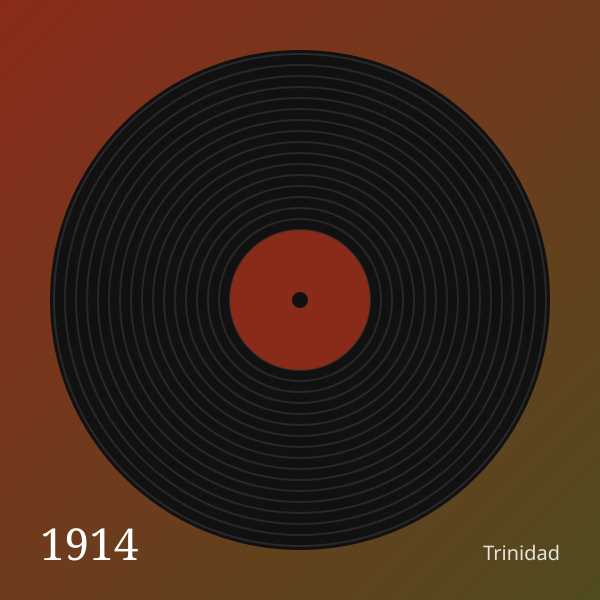

Julian Whiterose ("J. Resigna"), "Iron Duke in the Land" (Single Tone Calipso I), 1914

Recording: Victor matrix G-145, Port of Spain, 11 Sep 1914, issued Victor 67362; also G-147 "Double Tone Calipso" ("Bayonet Charge by the Laws of Iron Duke"), Victor 67387
Background: among the first calypsos recorded with lyrics, sung in English by the leader of the White Rose Masquerade Band (real name Henry Julian).
Why it's here: calypso is public boast and insult (picong); a street-level, Caribbean form of the sung grudge, pre-1926.